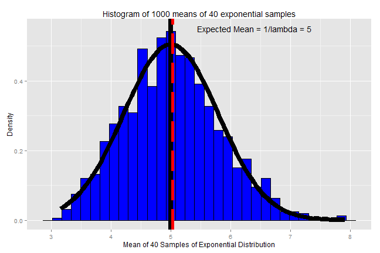

Using the exponential function, let's examine the distribution of averages of multiple sets of 40 exponentials. The mean of an exponential function is 1/lambda and the standard deviation is also 1/lambda. For these simulations, lambda will be 0.2.
library(ggplot2) #load ggplot2 package
set.seed(314) #set seed for reproducible results
Let's run 1000 simulations averaging 40 sample expontential samples.
nosim <- 1000
n <- 40
lambda <- 0.2
Set the mean of the 40 exponential samples as a function to be used to create a data frame of 1000 simulation values.
test <- function(n=n,lambda=lambda) mean(rexp(n, lambda))
dat <- data.frame(x = c(apply(matrix(n,nosim), 1, test,lambda)))
Plotting a histogram of the results shows the distribution of average simulation values.
g <- ggplot(dat) + geom_histogram(aes(x=x,y=..density..), colour = "black", fill = "blue")
g <- g + labs(title = "Histogram of 1000 means of 40 exponential samples")
g <- g + labs(x = "Mean of 40 Samples of Exponential Distribution") + labs(y = "Density")
g <- g + stat_function(fun = dnorm, size = 3, args = list(mean = 1/lambda, sd = 1/sqrt(n)/lambda))
g <- g + geom_vline(xintercept = 1/lambda, colour = "black", size = 3)
g <- g + geom_vline(xintercept = mean(dat$x), colour = "red", linetype = "longdash", size = 2)
g <- g + annotate("text", x = 6.4, y = 0.55, label = "Expected Mean = 1/lambda = 5")
g
## stat_bin: binwidth defaulted to range/30. Use 'binwidth = x' to adjust this.

1. Show where the distribution is centered at and compare it to the theoretical center of the distribution.
The distribution mean (red dashed line) is centered near the theoretical mean (black line) near 5. The expected mean is 1/0.2 = 5. The calculated mean is 5.0233404.
2. Show how variable it is and compare it to the theoretical variance of the distribution.
The expected variance is calculated using 1/(n*lambda2). The calculated variance is close and would be closer with more simulations.
exp_var <- round(1/(n*lambda^2),3)
calc_var <- round((sd(dat$x))^2,3)
print(c("Expected Variance =", exp_var))
## [1] "Expected Variance =" "0.625"
print(c("Calculated Variance =", calc_var))
## [1] "Calculated Variance =" "0.651"
3. Show that the distribution is approximately normal.
Plotted with the histogram is is a normal distribution with a mean of 1/0.2 =5 and a standard deviation of (1/sqrt(n)*lambda) = 1/(sqrt(40)*0.2) = 0.791, which matches the histogram well.